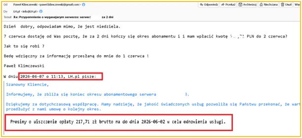
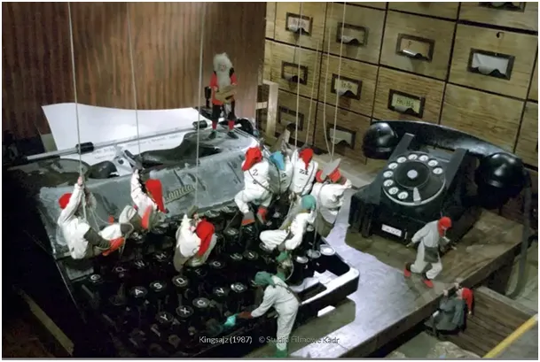

Spokojnie to tylko awaria!
Dziś ważny post strategiczno-taktyczny!
Prowadzenie bloga nie jest rzeczą łatwą. Nie chodzi nawet o dbałość w dokumentacji i pisanie rzeczy sprawdzonych i wiarygodnych. Jest na świecie miliony blogerów, ktorzy piszą, co im serce mówi. Są to blogi literackie, science fiction lub propagandowe, nawet jeśli bloger myśli, że jest dokumentalistą lub odkrywcą, ewentualnie demaskatorem, o tzw. "sygnalistach" nie wspomnę.
Pisanie bloga to w moim przypadku prowadzeniem swojej własnej działalności naukowej i pisanie wyników badań i analiz, to także utrzymywanie serwera i dbałość o formę publikacji, ich layout itp.
Kilka lat temu w trakcie covidowego, zbiorowego szaleństwa zablokowano mi wszystkie profile na socialmediach a także zablokowano mi prywatną pocztę, z której nadawałem newsletter. To ostatnie zdarzenie nosi znamiona poważnego przestępstwa, ale sprawa jest w toku i o niej napiszę osobno. Wszystkie te szykany miały jeden powód, publikowałem oficjalne dane: rządowe, GUSu, ministra zdrowia (i nagłej śmierci), WHO, oraz wiele innych rządowych agend zdrowia na całym świecie, głównie w Europie, z których dobitnie wynika, że nie było żadnej epidemii/plandemi, a bilans zgonów w sezonie 2020 był wyraźnie poniżej średniej wieloletniej. Tak powstał blog na stronie www, potem wytopiłem globalne oziębienie.
Tak niski wskaźnik zgonów był wynikiem m.i.n. bardzo lekkiej zimy 2019/20. Fatalnym zrządzeniem losu dla propagandy śmierci pisałem o sprawach, którymi zajmowałem się zawodowo od 30 lat i miałem bardzo wysokie oceny merytoryczne w środowisku biznesu, głównie wydawców mediów i ośrodków badania opinii publicznej, które przez kilka dekad z moich analiz i zaawansowanych rozwiązań informatycznych i matematycznych korzystały.
Wróćmy do mojego bloga. Od kliku dni wygląda on fatalnie, ponieważ został przeprowadzony bez mojej zgody jego reset. Moje kody tworzące jego layou i logikę zostały zastąpione czymś, czego nie znam. Firma hostująca (LH - pl), ta której płacę za utrzymanie serwera przez kilka dni nie potrafi /nie chce / nie może wykonać banalnej czynności nadpisania obecnego fatalnego layoutu, kopiami zapasowymi, których podobno ma na 30 dni wstecz. Szkoda czasu na opisywanie żenujących rozmów z pracownikami. Groteska sięga zenitu, bo firma ta akurat teraz chcę się ze mną rozliczyć za kolejny rok i przysyła mi absurdalne noty, abym przeniósł się w czasie i zapłacił "przedwczoraj".

Wśród matematyków, logików i normalnych ludzi jest takie powiedzenie: "Jak potrzebujesz pan na wczoraj to przyjdź pan przedwczoraj". I tym optymistycznym akcentem, chcę Was uprzedzić, że przez kilka dni bloga może nie być, jestem na FB, póki co.
Bloga przeniosę do innego Matrixu lub King Sajzu, albo do krainy miodem i mlekiem płynącej, gdzie informatycy muszą zdać logikę na pierwszym roku albo: "Finito studiorum, kaine repetitorum!"

Będę się teraz przedzierał przez ocean możliwości rynkowo technicznych, w którym poza tonami szmelcu jest kilka pereł. Proszę dajcie znać, czy ta wiedza jest dla was przydatna. Mogę po fakcie zrobić z tego wpis przewodnik: "Jak hostować stronę i nie oszaleć i nie dać się naciągnąć."
Strona może nagle zniknąć, biorę pod uwagę też celowe działanie w okresie, gdy już poważne instytuty naukowe w tym CERN opublikowały badania molekularne atmosfery o tym, że kłamstwo klimatyczne jest horrendalne i za chwilę posypie się lawina procesów w skali międzynarodowej.
Możemy być z siebie bardzo dumni, a ja Wam za to dziękuję, że byliśmy na szpicy tego procesu i przez ostatnie 6 lat razem rozrywaliśmy głupotę na strzępy. Moje badania bez Waszego odbioru i kolportażu byłby smutnym, pożółkłym zeszytem w ciemnej szufladzie. Udało się nam zrobić kilka konferencji w tym w sejmie i cały szereg prezentacji. Rozumiecie jak kłopotliwe są moje raporty dla carbo-frustratów, ale bardziej dla handlarzy ETSami i podobnymi idiotyzmami, które nas kosztują krocie.
Paweł Klimczewski,